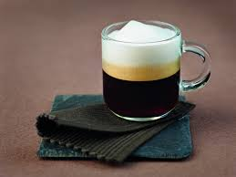
Espresso doble
Energía inmediata para tu día.
50 años compartiendo sabor en Tegucigalpa

Energía inmediata para tu día.
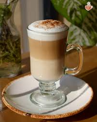
Cremoso y elegante.
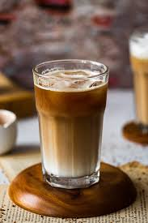
Suave con un toque dulce.
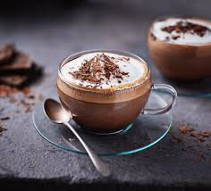
Chocolate oscuro y café.
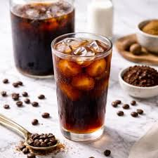
Refrescante y suave.
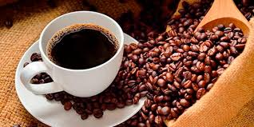
Orgánico de la región.

Frío y cremoso.
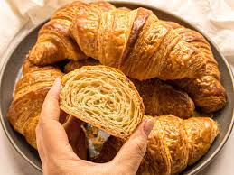
Clásico europeo.
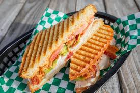
Práctico y saciante.
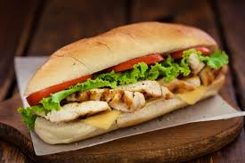
Nutritivo y rápido.
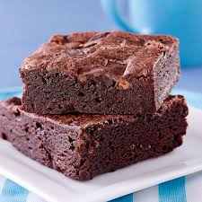
Indulgencia para la tarde.
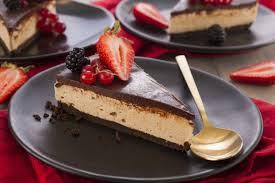
Postre insignia.
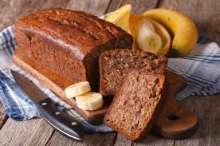
Tradicional y hogareño.
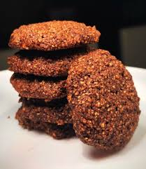
Ligera y energética.
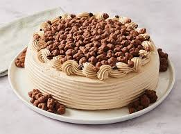
Toque hondureño especial.